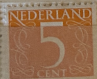
| SOURCE | TITLE| IMAGE MATCH | click to source page |
| Colnect | Stamp: Numeral (Netherlands(Numeral - 1946-1957 - Type 'Van Krimpen') Mi:NL 613YxA,Sn:NL 341,Yt:NL 611,Sg:NL 639a,AFA:NL 613,NVP:NL 465,Un:NL 460A 📮 | 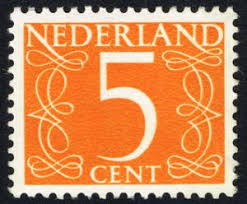 |
| HipStamp | Netherlands 1953 Sc#341 SG#639a #5 Orange Numeral Used | Europe - Netherlands & Colonies, General Issue Stamp / HipStamp | 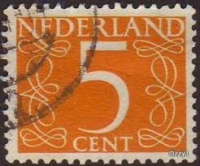 |
| Vintage Netherlands Stamp from 1946-47 | 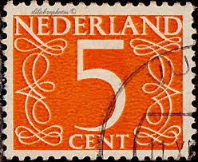 | |
| Colnect | Stamp: Numeral (Netherlands(Numeral - 1946-1957 - Type 'Van Krimpen') Mi:NL 612YxA,Sn:NL 340,Yt:NL 610,Sg:NL 638a,AFA:NL 612,NVP:NL 463,Un:NL 459A 📮 | 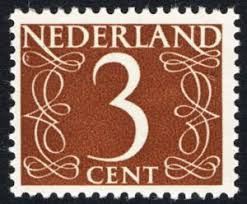 |
| Colnect | Stamp: Numeral Type 'Van Krimpen' - from Booklet (Netherlands(Numeral - 1964-1975 - Type 'Van Krimpen', from Booklet) Mi:NL 614XxDu,Yt:NL 612b,AFA:NL 614Cn,NVP:NL 467H 📮 | 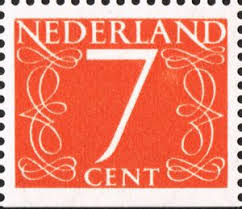 |
| eBay | Nederlands Sc.#340 Stamp | eBay | 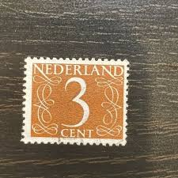 |
| HipStamp | Netherlands 340 Used Numeral 3 1953 (BP33335) | Europe - Netherlands & Colonies, General Issue Stamp / HipStamp | 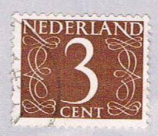 |
| Colnect | Stamp: Numeral (Netherlands(Numeral - 1946-1957 - Type 'Van Krimpen') Mi:NL 646,Sn:NL 342,Yt:NL 611A,Sg:NL 639c,AFA:NL 646,NVP:NL 466,Un:NL 460B 📮 |  |
| iStock | Netherlands Postage Stamp-foton och fler bilder på 1950-1959 - 1950-1959, Bild, Centtecken - iStock | 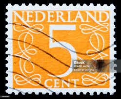 |
| Dreamstime.com | Cent Five Stamp Stock Photos - Free & Royalty-Free Stock Photos from Dreamstime | 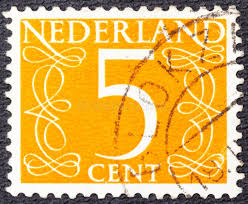 |
| Mercari | 1946 Netherlands (No.449) | Mercari | 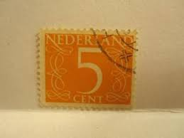 |
| stamps-plus.com | Stamps Plus | Netherlands | 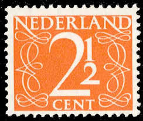 |
| The Itty Bitty Stamp Company | Netherlands Scott # 446-447 Mint Never Hinged – The Itty Bitty Stamp Company | 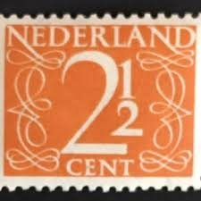 |
| iStock | Europe Postage Stamp Stock Photo - Download Image Now - 1960, Cent Sign, Close-up - iStock | 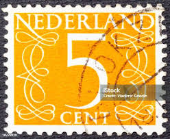 |
| Etsy | Dutch Stamp Bundle 100 Pieces - Glossy 160 Cents - Etsy New Zealand | 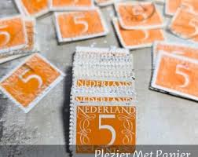 |
| eBay | Orange Used Dutch & Colonies Stamps for sale | eBay | 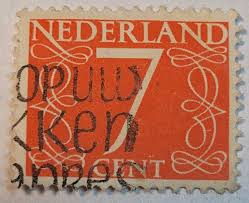 |
| Todocolección | holanda 824/28** - año 1965 - pro infancia - Buy Antique stamps of Netherlands on todocoleccion | 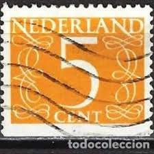 |
| Pixers | Poster Value of 1 cent stamp (Netherlands 1946) - PIXERS.US | 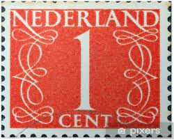 |
| sellosmundo.com | Netherlands. Netherlands Europe ref. 435 | 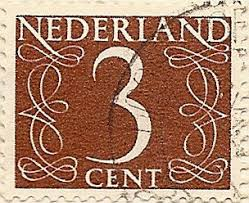 |
| HipStamp | Netherlands 343 Used Numeral 6 1953 (BP3342) | Europe - Netherlands & Colonies, General Issue Stamp / HipStamp | 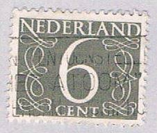 |
| Stamp Community Forum | Nederland – Netherlands 1946 – 1976 Van Krimpen (Numbers) - Stamp Community Forum | 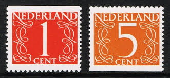 |
| Alamy | Used franked Nederland Netherlands Stamp, Juliana Regina 40c Forty Cent Stock Photo - Alamy | 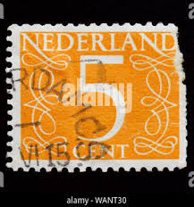 |
| Shutterstock | 6+ Thousand Netherlands Postmark Royalty-Free Images, Stock Photos & Pictures | Shutterstock | 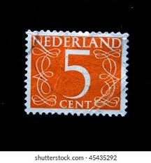 |
| Shutterstock | 80 5c Letter Royalty-Free Images, Stock Photos & Pictures | Shutterstock | 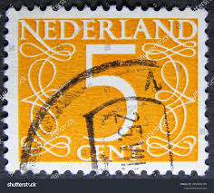 |
| PostBeeld.nl | Postzegels uit het jaar 1946 - PostBeeld.nl - Online Postzegel Winkel - Verzamelen |  |
| Stamp Community Forum | Nederland – Netherlands 1946 – 1976 Van Krimpen (Numbers) - Stamp Community Forum | 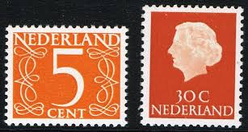 |
| eBay UK | Dutch Numeral Cancellation Stamps for sale | eBay UK | 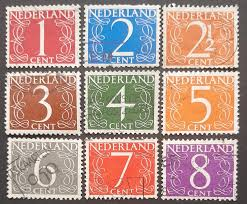 |
| 123RF | NETHERLANDS - CIRCA 1946 A Stamp Printed In The Netherlands Showing It S Value Of 2 Cent, Circa 1946 Banque D'Images et Photos Libres De Droits. Image 23499652 | 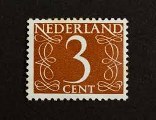 |
| Stampedia | NETHERLANDS 1946 2 cent Definitive Stamps, | | 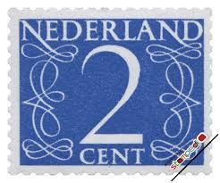 |
| PostBeeld.de | Briefmarken aus Niederlande - PostBeeld.de - Online Briefmarken kaufen - Sammeln | 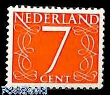 |
| Todocolección | sello holanda, nederland 6 cent, año 1940. - Buy Antique stamps of Netherlands on todocoleccion | 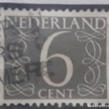 |
| sellosmundo.com | Netherlands. Netherlands Europe ref. 463 | 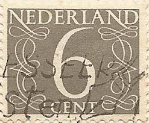 |
| eBay | Netherlands Issue 2014 Prestige Booklet (Prestige 55) Mint never Hinged | eBay | 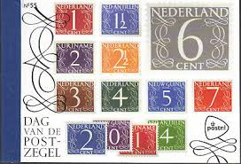 |
| iStock | Old 30 Lire Italian Postage Stamp Stock Photo - Download Image Now - Number 30, Postage Stamp, Black Color - iStock | 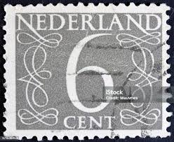 |
| Todocolección | sellos holanda, nederland, 5 cent, años, 1891 - Buy Antique stamps of Netherlands on todocoleccion | 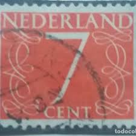 |
| Etsy | Buy Dutch Stamps With Cents Images Bundles 100 Pieces 1946-1976 Online in India - Etsy | 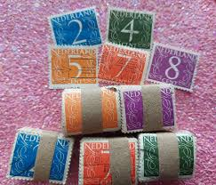 |
| eBay | NETHERLANDS EUROPE STAMPS MINT NEVER HINGED LOT 1205AA | eBay | 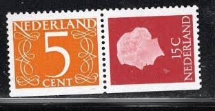 |
| beautiful dutch stamp Nederland 7c orange niederlande Pays-Bas Países Bajos Paesi Bassi netherland postage revenue porto timbre bollo sello marke marka briefmarke stamp | 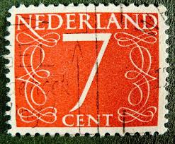 | |
| HipStamp | Search "Netherlands 1962" / HipStamp | 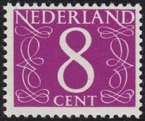 |
| Flickr | Netherlands postage stamp: Jan van Krimpen Numeral 4 | Flickr | 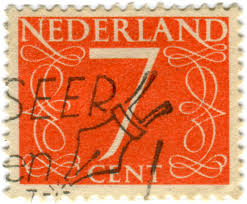 |
| allnumis.com | 6 Cent 1954, Numerals, Figures - Netherlands - Stamp - 9804 | 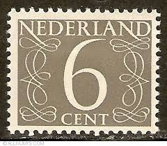 |
| iStock | Postage Stamps Oxeeye Daisy Stock Photo - Download Image Now - Black Background, Bud, Calendar Date - iStock | 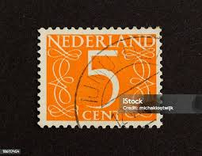 |
| HipStamp | Stamps - Netherlands - Scott# 340-343a - Used Set of 5 Stamps | Europe - Netherlands & Colonies, General Issue Stamp / HipStamp | 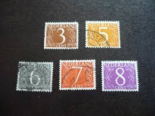 |
| juracek.com | James JURACEK :: Stamps for Collectors :: The N Countries | 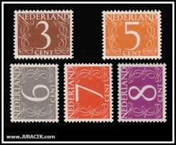 |
| Alamy | NETHERLANDS - CIRCA 1953: A stamp printed in the Netherlands, shows the value of a postage stamp, circa 1953 Stock Photo - Alamy | 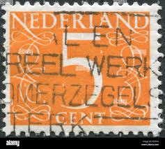 |
| Catawiki | Netherlands 1946/1957 - Numerical series on half-sheets and field divisions - NVPH 460, 461 en 463/467 - auction online Catawiki | 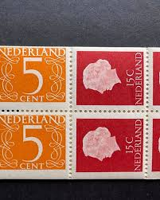 |
| iStock | Number Seven Stamp Stock Photo - Download Image Now - Netherlands, Abstract, Black Background - iStock | 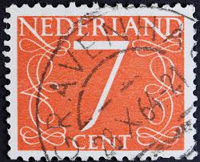 |
| Shutterstock | Netherlands Stamp: Over 6,834 Royalty-Free Licensable Stock Photos | Shutterstock | 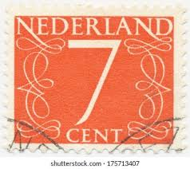 |
| eBay | NETHERLANDS - 1952 - 1957 - LOT OF STAMPS ON ALBUM PAGE - USED & MH | eBay | 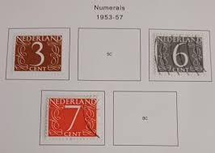 |
| Netherlands Numeral Type 1954 Stamp | 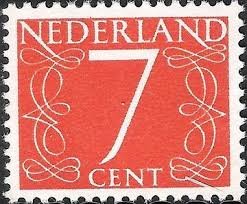 | |
| HipStamp | Netherlands, 2-1/2 Cents Numeral 1947, Blo4 VF Mnh! | Europe - Netherlands & Colonies, General Issue Stamp / HipStamp | 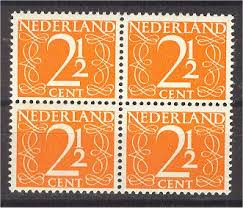 |
| 123RF | PAÍSES BAJOS - CIRCA 1941 A 7 1 2 Cent Sello Impreso En Los Países Bajos, Alrededor De 1941 Fotos, retratos, imágenes y fotografía de archivo libres de derecho. Image 23508431 | |
| eBay | NETHERLANDS STAMPS BLOCK MINT NEVER HINGED LOT 1624BJ | eBay | |
| Dreamstime.com | NETHERLANDS - CIRCA 1946: a Stamp Printed in the Netherlands Shows it`s Value of 7 Cent, Circa 1946. Editorial Stock Photo - Image of envelope, black: 185863808 | |
| Monika Matejcekova (mmatejcekova) – Profile | Pinterest | ||
| The Itty Bitty Stamp Company | Netherlands Scott # 282-283/341-343a Used – The Itty Bitty Stamp Company | |
| Shutterstock | October 6 2025 Jakarta Indonesia Postage Stock Photo 2692572803 | Shutterstock | |
| Flickr | Jeroen Koning | Flickr | |
| eBay | Blue Dutch Used Dutch & Colonies Stamps for sale | eBay |